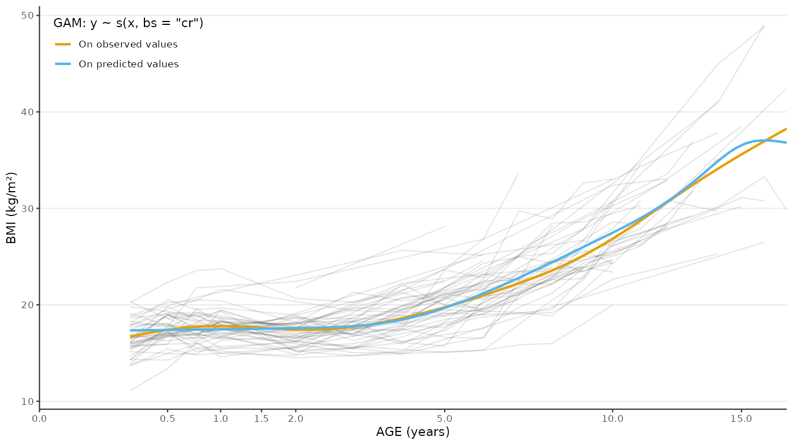

Run The Cubic Splines (Random Cubic/Linear Splines) Analysis
Mickaël Canouil, Ph.D. (mickael.canouil@cnrs.fr)
Source:vignettes/articles/run-cubic-splines.Rmd
run-cubic-splines.RmdSetup
library(eggla)
#> Default 'ggplot2' theme has been changed.
#> Default 'ggplot2' colour and fill scales set to 'viridis'.
library(growthcleanr)
library(broom.mixed)
library(data.table, quietly = TRUE)
# Setup for plots
library(ggplot2, quietly = TRUE)
library(patchwork)
okabe_ito_palette <- c(
"#E69F00FF", "#56B4E9FF", "#009E73FF", "#F0E442FF", "#0072B2FF",
"#D55E00FF", "#CC79A7FF", "#999999FF"
)Data
eggla includes a small dataset with 1050 rows and 6 variables.
ID(character): ID using three digits.age(numeric): age in years.sex(integer): sex with 1: male and 0: female.weight(numeric): weight in kilograms.height(integer): height in centimetres.-
bmi(numeric): Body Mass Index in kilograms per quare metre.data("bmigrowth") bmigrowth <- as.data.table(bmigrowth)bmigrowth[bmigrowth[["ID"]] == "001"] #> ID age sex weight height bmi #> <char> <num> <int> <num> <int> <num> #> 1: 001 0.00 0 3.318845 47 15.02420 #> 2: 001 0.25 0 6.585227 60 18.29230 #> 3: 001 0.50 0 7.239751 64 17.67517 #> 4: 001 0.75 0 9.474914 66 21.75141 #> 5: 001 2.00 0 13.990333 79 22.41681 #> 6: 001 4.00 0 25.909311 105 23.50051 #> 7: 001 6.00 0 30.117745 106 26.80469 #> 8: 001 12.00 0 77.958539 148 35.59101 #> 9: 001 14.00 0 92.021767 156 37.81302ggplot(data = bmigrowth) + aes(x = age, y = bmi, colour = factor(ID)) + geom_path(na.rm = TRUE, alpha = 0.25) + geom_point(size = 0.5, na.rm = TRUE, alpha = 0.25) + stat_smooth( method = "gam", formula = y ~ s(x, bs = "cr"), linetype = 1, colour = okabe_ito_palette[6], se = FALSE ) + theme(legend.position = "none") + labs(x = "AGE (years)", y = "BMI (kg/m\u00B2)") + facet_grid( cols = vars(sex), margins = TRUE, labeller = labeller( .cols = function(x) { c("0" = "FEMALE", "1" = "MALE", "2" = "FEMALE", "(all)" = "ALL")[x] } ) )
With Daymont’s QC
pheno_dt <- bmigrowth[
j = `:=`(
"agedays" = floor(age * 365.25), # convert to age in days and as integers ...
"WEIGHTKG" = as.numeric(weight),
"HEIGHTCM" = as.numeric(height)
)
][
j = `:=`(# recode sex with Male = 0 and Female = 1...
"sex_daymont" = c("0" = "1", "1" = "0")[as.character(sex)]
)
]
pheno_dt_long <- melt(
data = pheno_dt,
id.vars = c("ID", "age", "sex", "agedays", "sex_daymont"),
measure.vars = c("WEIGHTKG", "HEIGHTCM"),
variable.name = "param",
value.name = "measurement"
)[
j = clean := cleangrowth(# Daymont's QC from 'growthcleanr'
subjid = ID,
param = param,
agedays = agedays,
sex = sex_daymont,
measurement = measurement,
quietly = TRUE
)
]
pheno_dt_clean <- dcast(
data = pheno_dt_long[clean %in% "Include"], # Exclude all flags
formula = ... ~ param,
value.var = "measurement"
)[
j = "bmi" := WEIGHTKG / (HEIGHTCM / 100)^2 # recompute bmi based using QCed variables
][
!is.na(bmi) # exclude missing BMI related to measurements exclusion
]Modelling Female
pheno_dt_female <- pheno_dt_clean[sex_daymont == 1]
res <- egg_model(
formula = log(bmi) ~ age, # + covariates, e.g., `log(bmi) ~ age + covariates`
data = pheno_dt_female,
id_var = "ID",
random_complexity = 2, # "auto", 3, 2 or 1.
use_car1 = TRUE # default is FALSE
)
#> Fitting model:
#> nlme::lme(
#> fixed = log(bmi) ~ gsp(age, knots = c(1, 8, 12), degree = rep(3, 4), smooth = rep(2, 3)),
#> data = data,
#> random = ~ gsp(age, knots = c(1, 8, 12), degree = rep(3, 4), smooth = rep(2, 3))[,1:3] | ID,
#> na.action = stats::na.omit,
#> method = "ML",
#> correlation = nlme::corCAR1(form = ~ 1 | ID),
#> control = nlme::lmeControl(opt = "optim", niterEM = 25, maxIter = 500, msMaxIter = 500)
#> )
class(res)
#> [1] "lme"
sres <- tidy(res)
sres[["term"]] <- sub("gsp\\(.*\\)\\)", "gsp(...)", sres[["term"]]) # simplify output
sres
#> # A tibble: 18 × 8
#> effect group term estimate std.error df statistic p.value
#> <chr> <chr> <chr> <dbl> <dbl> <dbl> <dbl> <dbl>
#> 1 fixed NA (Intercept) 2.66e+ 0 0.0323 409 82.1 2.97e-256
#> 2 fixed NA gsp(...)D1(… 7.37e- 1 0.113 409 6.53 1.96e- 10
#> 3 fixed NA gsp(...)D2(… -1.58e+ 0 0.239 409 -6.60 1.27e- 10
#> 4 fixed NA gsp(...)D3(… 1.62e+ 0 0.242 409 6.68 7.70e- 11
#> 5 fixed NA gsp(...)C(1… -1.63e+ 0 0.243 409 -6.70 7.13e- 11
#> 6 fixed NA gsp(...)C(8… 1.24e- 2 0.00399 409 3.12 1.97e- 3
#> 7 fixed NA gsp(...)C(1… -1.74e- 2 0.00990 409 -1.76 7.91e- 2
#> 8 ran_pars ID sd_(Interce… 7.66e- 2 NA NA NA NA
#> 9 ran_pars ID cor_gsp(...… -4.82e- 1 NA NA NA NA
#> 10 ran_pars ID cor_gsp(...… 3.17e- 1 NA NA NA NA
#> 11 ran_pars ID cor_gsp(...… 3.08e- 8 NA NA NA NA
#> 12 ran_pars ID sd_gsp(...)… 2.66e- 2 NA NA NA NA
#> 13 ran_pars ID cor_gsp(...… -9.06e- 1 NA NA NA NA
#> 14 ran_pars ID cor_gsp(...… -3.86e- 8 NA NA NA NA
#> 15 ran_pars ID sd_gsp(...)… 2.76e- 3 NA NA NA NA
#> 16 ran_pars ID cor_gsp(...… 2.08e- 9 NA NA NA NA
#> 17 ran_pars ID sd_gsp(...)… 2.93e-11 NA NA NA NA
#> 18 ran_pars Residual sd_Observat… 8.24e- 2 NA NA NA NA Predicted Values
ggplot() +
aes(x = age, y = bmi) +
geom_path(
data = pheno_dt_female,
mapping = aes(group = ID),
alpha = 0.10,
show.legend = FALSE
) +
stat_smooth(
data = pheno_dt_female,
mapping = aes(colour = "On observed values"),
se = FALSE,
method = "gam",
formula = y ~ s(x, bs = "cr")
) +
stat_smooth(
data = setnames(
x = predict_bmi(res, start = min(pheno_dt_female[["age"]]), end = max(pheno_dt_female[["age"]])),
old = c("egg_ageyears", "egg_bmi"),
new = c("age", "bmi")
),
mapping = aes(colour = "On predicted values"),
se = FALSE,
method = "gam",
formula = y ~ s(x, bs = "cr")
) +
scale_x_sqrt(
expand = c(0, 0),
breaks = c(0, 0.5, 1, 1.5, 2, 5, 10, 15),
limits = c(0, NA)
) +
scale_colour_manual(values = okabe_ito_palette[c(1, 2)]) +
labs(
x = "AGE (years)",
y = "BMI (kg/m\u00B2)",
colour = "GAM: y ~ s(x, bs = \"cr\")"
) +
theme(
legend.position = c(0.01, 0.99),
legend.justification = c("left", "top")
)
#> Warning: A numeric `legend.position` argument in `theme()` was deprecated in ggplot2
#> 3.5.0.
#> ℹ Please use the `legend.position.inside` argument of `theme()` instead.
#> This warning is displayed once every 8 hours.
#> Call `lifecycle::last_lifecycle_warnings()` to see where this warning was
#> generated.
Residuals
plot_residuals(
x = "age",
y = "log(bmi)",
fit = res
) +
plot_annotation(
title = "Cubic Splines (Random Linear Splines) - BMI - Female",
tag_levels = "A"
)Predicted Average Slopes
res_pred_slopes <- egg_slopes(
fit = res,
period = c(0, 0.5, 1.5, 3.5, 6.5, 10, 12, 17)
)
head(res_pred_slopes)
#> ID pred_period_0 pred_period_0.5 pred_period_1.5 pred_period_3.5
#> 1 001 2.732883 2.944564 2.957204 3.008839
#> 2 004 2.655645 2.857561 2.852242 2.874241
#> 3 005 2.617361 2.828687 2.841831 2.899329
#> 4 006 2.564983 2.770892 2.772895 2.806881
#> 5 007 2.708577 2.932235 2.967428 3.058568
#> 6 009 2.629264 2.830376 2.824291 2.848131
#> pred_period_6.5 pred_period_10 pred_period_12 pred_period_17 slope_0--0.5
#> 1 3.212888 3.425864 3.521036 3.616467 0.4233623
#> 2 3.049543 3.252807 3.353948 3.500953 0.4038318
#> 3 3.124311 3.380123 3.508675 3.715882 0.4226518
#> 4 2.993526 3.199952 3.298031 3.421888 0.4118177
#> 5 3.307871 3.552408 3.655346 3.737519 0.4473155
#> 6 3.034627 3.263737 3.385831 3.604892 0.4022230
#> slope_1.5--3.5 slope_6.5--10 slope_12--17
#> 1 0.02581752 0.06085040 0.01908620
#> 2 0.01099952 0.05807523 0.02940106
#> 3 0.02874899 0.07308909 0.04144143
#> 4 0.01699345 0.05897876 0.02477156
#> 5 0.04557004 0.06986760 0.01643458
#> 6 0.01192013 0.06546007 0.04381225
plot_egg_slopes(
fit = res,
period = c(0, 0.5, 1.5, 3.5, 6.5, 10, 12, 17)
)
#> Warning in scale_y_continuous(..., transform = transform_log10()):
#> log-10 transformation introduced infinite values.Area Under The Curve
res_auc <- egg_aucs(
fit = res,
period = c(0, 0.5, 1.5, 3.5, 6.5, 10, 12, 17)
)
head(res_auc)
#> ID auc_0--0.5 auc_1.5--3.5 auc_6.5--10 auc_12--17
#> 001 001 1.431625 5.948346 11.65119 18.08524
#> 004 004 1.390543 5.707389 11.05500 17.35691
#> 005 005 1.373758 5.722382 11.41035 18.28601
#> 006 006 1.346219 5.561272 10.86764 17.02868
#> 007 007 1.422485 6.009543 12.04553 18.74309
#> 009 009 1.377140 5.652578 11.04401 17.68476
plot_egg_aucs(
fit = res,
period = c(0, 0.5, 1.5, 3.5, 6.5, 10, 12, 17)
)
Correlations
egg_correlations(
fit = res,
period = c(0, 0.5, 1.5, 3.5, 6.5, 10, 12, 17)
)
#> term auc_0--0.5 auc_1.5--3.5 auc_6.5--10 auc_12--17
#> <char> <num> <num> <num> <num>
#> 1: auc_0--0.5 1.00000000 0.7353315 0.1339844 -0.05890455
#> 2: auc_1.5--3.5 0.73533146 1.0000000 0.7636209 0.55930196
#> 3: auc_6.5--10 0.13398439 0.7636209 1.0000000 0.92716065
#> 4: auc_12--17 -0.05890455 0.5593020 0.9271607 1.00000000
#> 5: slope_0--0.5 -0.31696965 0.4092298 0.8827566 0.84524036
#> 6: slope_1.5--3.5 -0.35080310 0.3761391 0.8765640 0.87021488
#> 7: slope_6.5--10 -0.50529328 0.1044868 0.6906018 0.88179768
#> 8: slope_12--17 -0.24988480 -0.5206577 -0.4070861 -0.05033073
#> 9: AP_ageyears -0.37200367 0.2662496 0.8172338 0.78849249
#> 10: AR_ageyears 0.36773340 -0.2764872 -0.8414245 -0.83719399
#> 11: AP_bmi 0.98613035 0.8780203 0.3266741 0.08070058
#> 12: AR_bmi 0.84773402 0.9912778 0.6586349 0.41091288
#> slope_0--0.5 slope_1.5--3.5 slope_6.5--10 slope_12--17 AP_ageyears
#> <num> <num> <num> <num> <num>
#> 1: -0.3169697 -0.3508031 -0.50529328 -0.24988480 -0.3720037
#> 2: 0.4092298 0.3761391 0.10448682 -0.52065771 0.2662496
#> 3: 0.8827566 0.8765640 0.69060183 -0.40708606 0.8172338
#> 4: 0.8452404 0.8702149 0.88179768 -0.05033073 0.7884925
#> 5: 1.0000000 0.9965866 0.80802778 -0.42159132 0.9911544
#> 6: 0.9965866 1.0000000 0.85390583 -0.34529354 0.9869343
#> 7: 0.8080278 0.8539058 1.00000000 0.19357035 0.7832160
#> 8: -0.4215913 -0.3452935 0.19357035 1.00000000 -0.2729028
#> 9: 0.9911544 0.9869343 0.78321602 -0.27290277 1.0000000
#> 10: -0.9969290 -0.9992709 -0.83026091 0.20818653 -0.9867121
#> 11: -0.1848452 -0.2252452 -0.41171335 -0.36373211 -0.2175252
#> 12: 0.2043257 0.1649506 -0.08689075 -0.44388763 0.1579897
#> AR_ageyears AP_bmi AR_bmi
#> <num> <num> <num>
#> 1: 0.3677334 0.98613035 0.84773402
#> 2: -0.2764872 0.87802031 0.99127780
#> 3: -0.8414245 0.32667409 0.65863485
#> 4: -0.8371940 0.08070058 0.41091288
#> 5: -0.9969290 -0.18484521 0.20432572
#> 6: -0.9992709 -0.22524516 0.16495064
#> 7: -0.8302609 -0.41171335 -0.08689075
#> 8: 0.2081865 -0.36373211 -0.44388763
#> 9: -0.9867121 -0.21752515 0.15798975
#> 10: 1.0000000 0.21535742 -0.17646093
#> 11: 0.2153574 1.00000000 0.91966781
#> 12: -0.1764609 0.91966781 1.00000000Outliers
egg_outliers(
fit = res,
period = c(0, 0.5, 1.5, 3.5, 6.5, 10, 12, 17),
knots = c(1, 8, 12)
)[
i = Outlier != 0,
j = head(.SD),
by = "parameter"
]
#> parameter ID Row Distance_IQR Outlier_IQR Outlier
#> <char> <char> <int> <num> <num> <num>
#> 1: auc_0--0.5 064 32 1.395147 1 1
#> 2: auc_1.5--3.5 007 5 1.307930 1 1
#> 3: auc_1.5--3.5 044 22 1.358904 1 1
#> 4: AP_bmi 044 21 1.319709 1 1
#> 5: AR_bmi 033 16 1.331621 1 1
#> 6: AR_bmi 044 21 1.622874 1 1